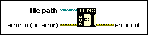

TDMS Defragment Function
Owning Palette: TDM Streaming VIs and Functions
Requires: Base Development System
Defragments the .tdms file data specified in the file path input. Use this function to clean up your .tdms data when it becomes cluttered, and increase performance.

 Add to the block diagram Add to the block diagram |
 Find on the palette Find on the palette |